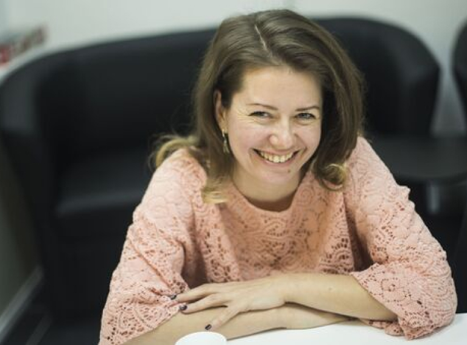

Hello! I’m your English tutor.
Let me introduce yourself.

я получила по специальности
учитель английского языка в ЯГПУ им. Ушинского.
После этого я переехала в Великобританию, где поступила в University of Birmingham.